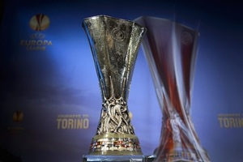

우승 트로피

UEFA컵 시절부터 사용되어왔던 디자인을 고수 중이며 이 트로피는 1972년 UEFA 컵 결승전에서 첫 사용되었습니다. 공식 명칭은 The UEFA Cup 또는 Coupe UEFA 로 불립니다.
이탈리아 밀라노의 베르토니 공방에서 디자인하고 제작했으며 받침대는 순은과 노란색 대리석의 주춧돌로 디자인이 되었고 받침대 위에는 축구공을 다투는 듯한 선수들로 조각 되어 있지만,
실제로는 UEFA 엠블럼이 새겨진 팔각형 모양의 컵을 떠받치고 있는 형태입니다. 높이 65cm에 무게 15kg으로 엄청 크면서 가장 무거운 트로피로, 덕분에 가격이 비쌉니다. 판매를 하는
물건은 아니지만 약 450만 달러(60억원)의 현물 가치를 갖고 있는 것으로 평가받고 있으며, 이는 현존하는 축구 대회의 트로피로서는 FIFA 월드컵 트로피와 CONMEBOL 리베르타도레스의
트로피에 이어 3위에 해당하는 가격입니다.